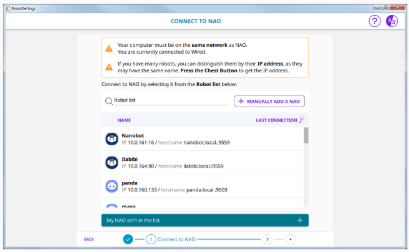

Configure NAO¶
During this step you will: configure NAO’s timezone, password, content, etc. |
Launch Robot Settings setup wizard¶
| Step | Action |
|---|---|
Launch Robot settings. 
|
|
Click the Setup button. |
|
Follow the recommendations displayed then click the Start button. The Getting started wizard appears. |
NAO - Getting started wizard¶
Follow the step by step Getting started wizard to configure your robot.
Here are the main steps:
1 - Prepare NAO¶
Prepare NAO guides you step by step to:
|
2 - Connect to NAO¶
Connect to NAO guides you to:
|
 |
3 - Configure NAO¶
Configure NAO guides you step by step to:
|
Warning
Due to a connection issue, you may be unable to log in to your SoftBank Robotics account. To workaround this issue, restart your NAO and reconnect to the robot.
4- Manage NAO content¶
Manage NAO content guides you step by step to:
|
Final summary¶
| Done screen summarize the settings of your robot. |
Next step¶
If you had previously set up a WiFi connection You can now remove the Ethernet cable and put back the hatch behind the head of the robot. As a consequence, Robot Settings will lost the connection and the robot will switch to the previously registered WiFi network. Connect your computer on this WiFi network and ask again NAO his IP Address in order to reconnect Robot Settings to the robot. |
If you haven’t set up a WiFi connection previously When you want to connect to NAO again, plug the Ethernet cable and ask for NAO IP address. Once connected in Robot Settings, you can setup a WiFi connection in the NAO settings. |